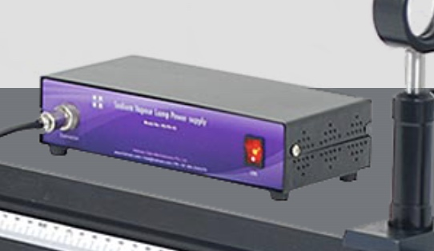
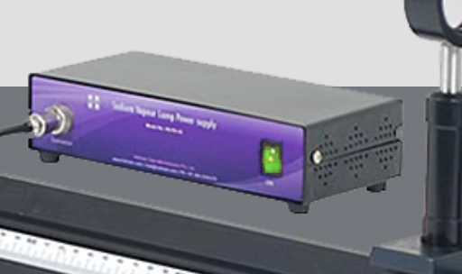
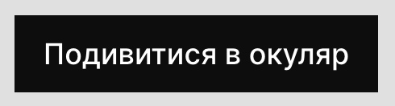
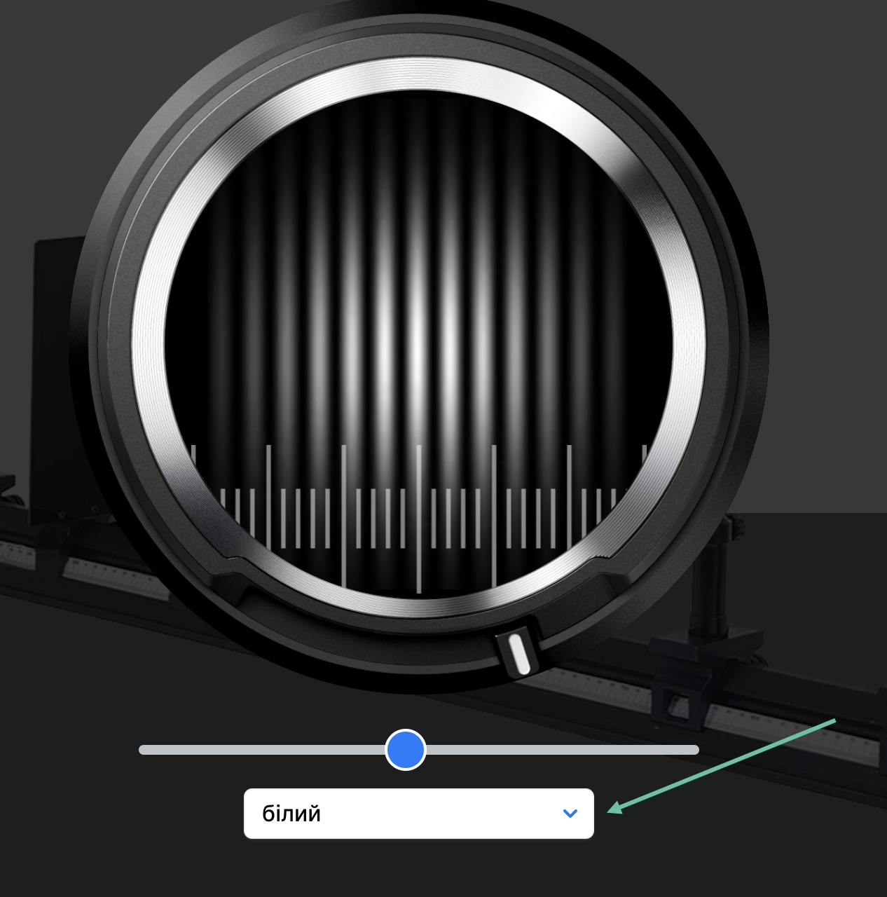
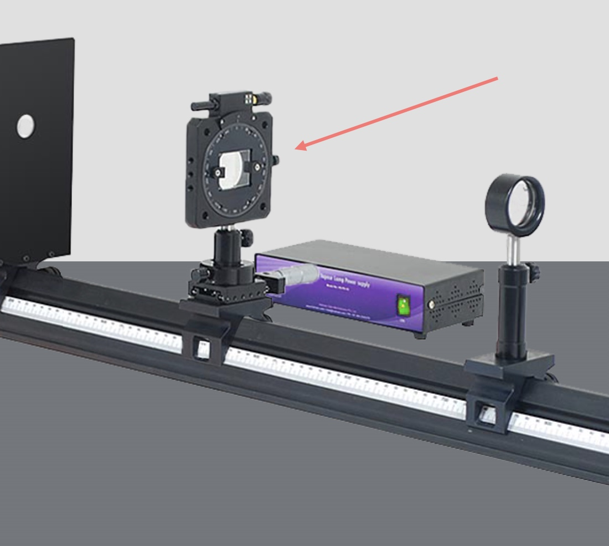

Довідка з виконання
лабораторної роботи
На цій сторінці описуються ключові моменти у виконанні віртуальної лабораторної роботи, які можуть викликати питання.
1. На екрані виконання Ви побачите прилад з двома елементами управління. Для початку виконання необхідно увімкнути прилад за допомогою відповідної кнопки:
Зображення 1, початок виконання1-a. Якщо установка увімкнена, кнопка на її коробці повинна "загорітися" зеленим світлом (див. зображення). Цю саму кнопку також можна використовувати для вмикання або вимикання пристрою.
 Зображення 2, вимкнений стан  Зображення 3, увімкнений стан2. Після увімкнення приладу можна переходити до перегляду отриманого зображення для зняття замірів. Для цього натискаємо на кнопку "Подивитися в окуляр":
 Зображення 4, перегляд інтерференційної картини3. При перегляді інтерференційної картини можна змінити фільтр та одразу побачити іншу інтерференційну картину:
 Зображення 5, зміна фільтру4. Знизу також знаходиться повзунок, за допомогою якого можна пересувати шкалу вимірювань вліво або право:
 Зображення 6, повзунок переміщення лінійки
Зображення 6, повзунок переміщення лінійки
5. Виконання лабораторної роботи передбачає заміри відстані між максимумами на різних відстанях від біпризми до екрану. Положення можна міняти, якщо навести курсор миші на біпризму та "потягнути":
 Зображення 7, початкове положення
Зображення 7, початкове положення
 Зображення 8, друге положення